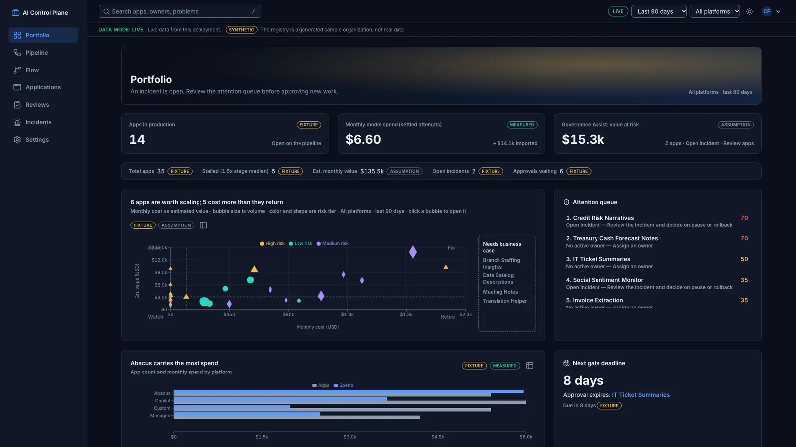
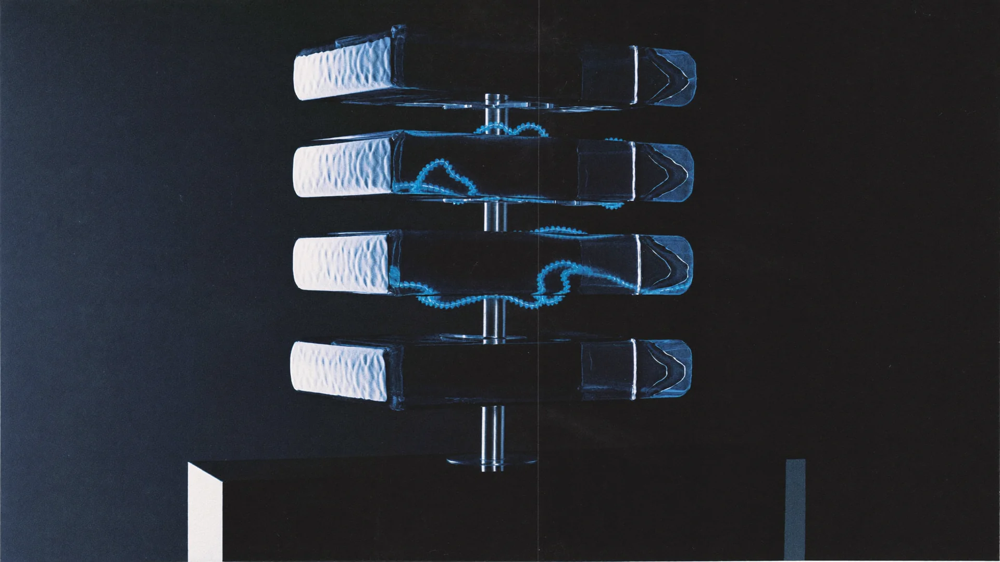

RELEASE / HIGH-CAPABILITY LLMWITHHELD
5/10
full-candidate release gates passed
- Macro F1
- 0.885 / 0.893 floor
- Lowest sensitive recall
- 0.60 / 0.95 floor
- Authoritative configuration
- classifier_v1
PRODUCT STRATEGY → WORKING SYSTEM
An enterprise AI control plane that connects investment, evaluation,
release, and recovery.
Built end to end. Tested against real model results.
A portfolio case study by Abhishek Shah
01 / THE PRODUCT JUDGMENT
SUPPORT TRIAGE · MEASURED RESULTSThe LLM looked promising. The release gates told a more complicated story.
Gemini 3.8 Flash improved auto-routed precision, but failed the overall quality floor and four sensitive-intent recall gates. The system recorded the decision: withhold activation. Keep the classifier authoritative.
Read the release recommendation ↗full-candidate release gates passed
Better projected economics do not override a failed gate. The cohort projected $151 more net value over a 14-day shadow replay—an assumption-based estimate. It still failed 2 of 6 cohort gates.
02 / INSIDE THE PRODUCT
REAL INTERFACE CAPTURESStart with the portfolio. Follow one application through its business case, model comparison, release decision, and incident response.

Interactive demo: the Python backend runs in your browser via Pyodide. Changes stay local; model responses use fixtures. No sign-in or cloud credentials required.
03 / THE DATA ONTOLOGY
THE STRUCTURE BEHIND EVERY DECISIONA metric without context is just a number.
The ontology gives the system a shared vocabulary: which application, which configuration, which dataset, which policy, and whose decision. These relationships make the product explainable from the portfolio down to an individual release gate.

Every Metric carries a value, unit, provenance, and
source. Measured outcomes stay distinguishable from modeled
scenarios.
Observed model results and actual API spend
Shadow traffic and replayed operating signals
Authored drift cases and demo responses
Business volumes, unit costs, and projected value
Implemented as typed Pydantic records and explicit IDs—not a graph database. Configurations, policies, reviews, and app events are create-only through application code. Direct database administrators can still alter records.
04 / THE FOUR-MINUTE WALKTHROUGH
FROM PORTFOLIO TO RECOVERYA concise tour of the major screens and functionality: investment decisions, lifecycle gates, evaluations, policy, release, monitoring, and incidents.
05 / BUILT BEYOND THE INTERFACE
PRODUCT THINKING, ENFORCED IN CODEReact + TypeScript at the surface. Python contracts and policy underneath. A Google Cloud deployment designed around identity, budget enforcement, and traceable decisions.
Nine lifecycle stages. Role-based transitions. Independent review. The server validates a stage change before it becomes an event.
An integer-microdollar ledger reserves budget before inference and settles actual cost once. Uncertain attempts hold the reservation instead of risking a duplicate charge.
Firestore records and evaluation artifacts export through Cloud Storage into BigQuery staging tables. MERGE by stable event ID keeps repeated exports from inflating totals. Raw message text is excluded.
In the simulated drift drill, the review-rate alert fired on day 10. Automation paused, cases moved to human review, and a passing shadow check allowed recovery on day 13.
The diagrams cover runtime, identity, budget settlement, release, analytics, and delivery—including the physical schema and data lineage.
This is a working portfolio project. The 40-app portfolio is synthetic; Banking77 evaluation results are measured; shadow traffic is simulated; drift cases are authored fixtures. Business value is modeled, not realized. The Google Cloud deployment was verified and then torn down. The public demo runs locally in your browser.
Read the incident findings ↗STRATEGY → SYSTEM → EVIDENCE
Explore the decisions. Inspect the contracts.
Try the system for
yourself.